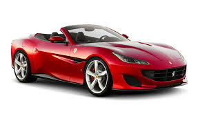
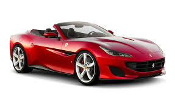
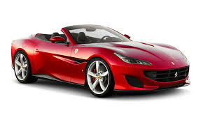

| Former Type | Public |
|---|---|
| Speed | 217mph |
| Founder | Enzo Ferrari |
| Founded | 1939 |
| Headquaters | Amsterdam, Netherlands |
| Class type | Sports cars |
| body type | 2 door |

Enzo Ferrari was not at first interested in the idea of producing road cars when he formed Scuderia Ferrari in 1929, with headquarters in Modena. Scuderia Ferrari (said literally means "Ferrari Stable" and is usually used to mean "Team Ferrari." Ferrari bought, prepared, and fielded Alfa Romeo racing cars for gentleman drivers, functioning as the racing division of Alfa Romeo. In 1933, Alfa Romeo withdrew its in-house racing team and Scuderia Ferrari took over as its works team:[1] the Scuderia received Alfa's Grand Prix cars of the latest (detailed descriptions of exactly what is required) and fielded many famous drivers such as Tazio Nuvolari and Achille Varzi. In 1938, Alfa Romeo brought its racing operation again in-house, forming Alfa Dead body in Milano and hired Enzo Ferrari as manager of the new racing department; therefore the Scuderia Ferrari was broken up.
Scuderia Ferrari has participated in (more than two, but not a lot of) classes of motorsport, though it is now only officially involved in Formula One. It is the only team to have competed in the Formula One World Championship continuously since its beginning in 1950. Jose Froilán González gave the team its first F1 victory at the 1951 British Grand Prix. Alberto Ascari gave Ferrari its first Drivers Championship a year later. Ferrari is the oldest team in the championship, and the most successful: the team holds nearly every Formula One record.
|
|
|
The 458 is powered by a 4,499 cc (274.5 cu in; 4.5 L) V8 engine of the "Ferrari/Maserati" F136 engine family, producing 570 PS (419 kW; 562 hp) at 9,000 rpm (redline) and 540 N⋅m (398 lb⋅ft) at 6,000 rpm with 80% torque available at 3,250 rpm. Ferrari uncovered and showed off today at the Geneva Motor Show the replacement for the Enzo, a nearly 1000 hp. gas-electric combination of two things/gas-electric vehicle dubbed LaFerrari. The 499 buyers of the limited-edition supercar will get what Ferrari says is its fastest car ever: 0-62 mph in less than 3 seconds, 0-124 in less than 7 seconds, 0-186 mph in 15 seconds.